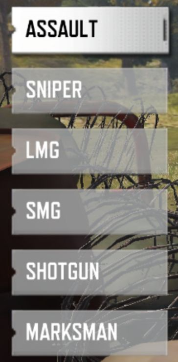
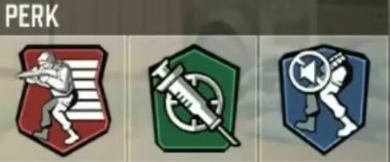
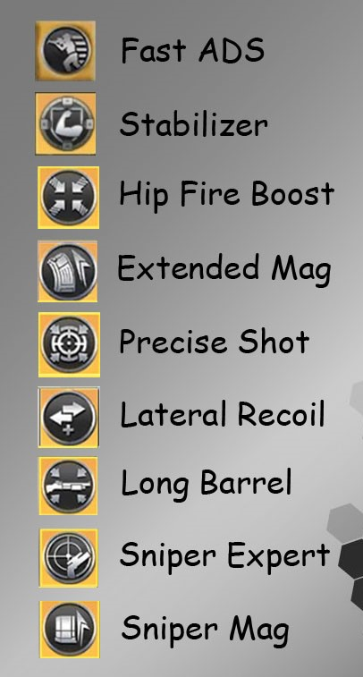

کالاف چیست؟
کالاف دیوتی موبایل (Call of Duty Mobile) یکی از بازیهای محبوب و معروف سبک **بتل رویال** و **شوتر اول شخص** است که توسط کمپانی **Activision** و با همکاری **Tencent Games** ساخته شده است. این بازی در سال ۲۰۱۹ برای موبایل منتشر شد و توانست در مدت کوتاهی طرفداران زیادی جذب کند.
ویژگیهای مهم کالاف⁚
1. **حالتهای متنوع بازی**: شامل حالتهای کلاسیک مولتیپلیر (مثل Team Deathmatch و Domination) و حالت بتل رویال.
2. **نقشههای معروف**: نقشههایی مانند Nuketown، Hijacked و Crash از نسخههای قبلی سری کالاف دیوتی.
3. **شخصیسازی سلاح و کاراکتر**: بازیکنان میتوانند تجهیزات، و سلاحهای خود را ارتقا دهند و به سبک دلخواه تغییر دهند.
4. **گرافیک و گیمپلی**: گرافیک بالای بازی همراه با گیمپلی سریع و هیجانانگیز.
5. **بازی آنلاین تیمی**: امکان بازی با دوستان و تشکیل تیمهای حرفهای.
.این بازی به دلیل بهروزرسانیهای مداوم، گرافیک بالا و گیمپلی روان، یکی از بهترین بازیهای موبایلی محسوب میشود و برای علاقهمندان به بازیهای شوتر و رقابتی انتخابی عالی است.
آشنایی با تفنگ های کالاف

در بازی کالاف دیوتی مویابل، هر دسته از اسلحهها ویژگیها و کاربردهای خاص خود را دارند که در شرایط مختلف و برای استراتژیهای متفاوت قابل استفاده هستند. در ادامه توضیح مختصری از هر دسته ارائه میشود:
1. دسته اول (تفنگهای تهاجمی)
این دسته از اسلحهها برای درگیریهای میانبرد و بلندبرد مناسب هستند. معمولاً بالانس خوبی بین دقت، قدرت آتش و سرعت شلیک دارند. مناسبترین انتخاب برای بازیکنانی که به دنبال انعطافپذیری هستند.
2. دسته دوم (تفنگهای تکتیرانداز)
این اسلحهها برای کشتن دشمنان از فواصل بسیار دور طراحی شدهاند. دقت بسیار بالایی دارند و اغلب با یک شلیک میتوانند دشمن را از پای درآورند. اما سرعت شلیک و تحرک آنها پایین است.
3. (ئسته سوم - مسلسلهای سبک)
مناسب برای پوشش آتش در درگیریهای طولانیمدت. ظرفیت بالای خشاب و قدرت آتش عالی از ویژگیهای این دسته است، اما دقت پایین و سرعت جابجایی کند از نقاط ضعف آن محسوب میشود.
4. (دسته چهارم - مسلسلهای کوچک)
ایدهآل برای درگیریهای نزدیک و میانبرد. سرعت شلیک بسیار بالا و قابلیت تحرک بیشتر دارند. اما قدرت تخریب آنها در فواصل دور کاهش مییابد.
5. ئسته پنجم (شاتگانها)
این اسلحهها برای درگیریهای نزدیک طراحی شدهاند. با یک شلیک نزدیک میتوانند دشمن را از پای درآورند. اما در فواصل متوسط و بلند بیاثر هستند و نیاز به دقت بالایی دارند.
6. دسته ششم (تفنگهای تکتیر نیمهاتوماتیک)
این اسلحهها بین تکتیرانداز و تفنگهای تهاجمی قرار دارند. برای فواصل میانبرد و بلندبرد مناسباند و معمولاً سرعت شلیک بهتری نسبت به اسنایپر دارند، اما نیاز به دقت بیشتری برای کشتن سریع دشمن دارند.
هر دسته از این سلاحها برای سبک بازی خاصی مناسب است و بازیکنان میتوانند بر اساس نقشه و استراتژی تیمی، بهترین گزینه را انتخاب کنند.
پرک مولتی چیست ؟

در بازی کالاف دیوتی موبایل، پرکها تواناییها و قابلیتهای ویژهای هستند که بازیکنان میتوانند برای بهبود سبک بازی خود از آنها استفاده کنند. پرکها به سه دسته تقسیم میشوند: قرمز، سبز و آبی. در ادامه توضیحات هر دسته آورده شده است:
---
دسته اول (پرکهای قرمز):
این پرکها بیشتر بر حمله و افزایش تواناییهای تهاجمی تمرکز دارند.
1. سبکوزن:
سرعت حرکت را افزایش میدهد و آسیب سقوط از ارتفاع را کمتر میکند.
2. جلیقه ضدانفجار:
آسیب ناشی از انفجار نارنجک و مواد منفجره را کاهش میدهد.
3. بازیابی سریع:
سرعت بازسازی جان را پس از آسیبدیدن بیشتر میکند.
4. حمل دو سلاح اصلی:
به شما اجازه میدهد به جای سلاح فرعی، دو سلاح اصلی حمل کنید.
---
دسته دوم (پرکهای سبز):
پرکهای سبز بیشتر برای شناسایی دشمنان و بهبود تاکتیکهای بازی استفاده میشوند.
1. روح:
شما را از دید هواپیماهای شناسایی دشمن مخفی نگه میدارد.
2. چابکی:
سرعت بالا رفتن از موانع و هدفگیری هنگام دویدن را افزایش میدهد.
3. سرعتعمل:
سرعت تغییر خشاب را افزایش میدهد.
4. ردیاب:
ردپای دشمنان را برای شناسایی بهتر نشان میدهد.
---
دسته سوم (پرکهای آبی):
این پرکها بیشتر بر حمایت و زنده ماندن تمرکز دارند.
1. بیصدا:
صدای قدمهای شما را کاهش میدهد تا دشمنان متوجه نشوند.
2. مهندس:
تجهیزات دشمن مانند مینها و تلهها را روی نقشه نشان میدهد.
3. دست سنگین:
تأثیر تجهیزات جنگی شما مانند نارنجکها و مینها را افزایش میدهد.
4. هشیاری:
به شما هشدار میدهد وقتی دشمن نزدیک است یا شما را هدف قرار داده است.
---
نکته: استفاده از پرکها باید بر اساس سبک بازی شما و نقشه انتخاب شود تا بهترین عملکرد را داشته باشید.

در بتل رویال کالاف دیوتی موبایل، پرکهایی که روی تفنگها نصب میشوند، با رنگهای مختلف دستهبندی شدهاند. این رنگها نشاندهنده سطح نادر بودن (کمیاب بودن) پرکها هستند. هرچه رنگ پرک بهتر باشد، توانایی آن قویتر است. در ادامه رنگها و معنی هرکدام توضیح داده شده است:
رنگبندی پرکهای تفنگ در بتل رویال
۱. سفید (معمولی)
پرکهای پایه و ابتدایی هستند.
توانایی خاص یا قدرتمندی ارائه نمیدهند.
معمولاً در ابتدای بازی و در مناطق ضعیفتر پیدا میشوند.
۲. سبز (غیرمعمول)
پرکهایی با قدرت کمی بیشتر از سطح سفید.
ویژگیهای بهبود یافته محدودی به تفنگ اضافه میکنند.
۳. آبی (نادر)
پرکهایی با قدرت متوسط.
ویژگیهایی مانند کاهش لگد یا افزایش برد مؤثر تفنگ را بهبود میبخشند.
۴. بنفش (حماسی)
پرکهایی بسیار قوی و تأثیرگذار.
این پرکها میتوانند تغییرات چشمگیری مانند افزایش دقت، کاهش لگد شدید یا افزایش آسیب ایجاد کنند.
۵. طلایی (افسانهای)
بهترین و کمیابترین پرکها.
این پرکها تفنگ را به سطحی کاملاً متفاوت میبرند و قابلیتهایی مانند شناسایی دشمنان یا افزایش چشمگیر آسیب را به آن اضافه میکنند.
نحوه یافتن پرکها
پرکهای سفید و سبز: در جعبههای معمولی و مناطق ابتدایی نقشه پیدا میشوند.
پرکهای آبی و بنفش: در جعبههای پیشرفتهتر یا مناطقی با ریسک بالا یافت میشوند.
پرکهای طلایی: معمولاً در جعبههای خاص یا تجهیزات کلاس لجندری پیدا میشوند.
نکته: ترکیب درست پرکها با تفنگ مناسب و سبک بازی شما میتواند شانس برنده شدن شما را در میدان نبرد به شدت افزایش دهد.
بتل رویال
AK-47...AK-117... HS (شاتگان )... M13... Kilo 141... DR-H...CR-56 AMAX... M4 LMG...ZRG 20mm (برای اسنایپ)...Fennec (برای نبرد نزدیک)... PP19 Bizon...Holger 26
بخش مولتی
Peacekeeper MK2... AS ....CBR4... HVK... QQ9 ... SKS (برای نبردهای دور)...Locus (برای اسنایپ)... RUS-79U
بهترین تفنگ ها بدون ترتیب قوی